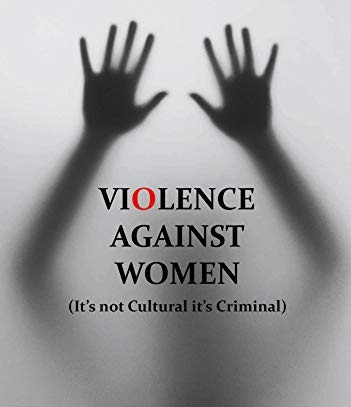

Violence against women
Violence against women (VAW), also known as gender-based violence[1] and sexual and
gender-based violence (SGBV), are violent acts primarily or exclusively committed
against women or girls. Such violence is often considered a form of hate crime,
committed against women or girls specifically because they are female, and can take many forms.
Such violence may arise from a sense of entitlement, superiority, misogyny or
similar attitudes in the perpetrator or his violent nature, especially against women.
UN regarding Violence against Women
The UN Declaration on the Elimination of Violence Against Women states, "violence against women is
a manifestation of historically unequal power relations between men and women" and "violence against
women is one of the crucial social mechanisms by which women are forced into a subordinate position
compared
with men."
Kofi Annan, Secretary-General of the United Nations, declared in a 2006 report posted on the United
Nations Development Fund for Women (UNIFEM) website:
" Violence against women and girls is a problem of pandemic proportions. At least one out of every
three
women around the world has been beaten, coerced into sex, or otherwise abused in her lifetime with
the
abuser usually someone known to her. "
Forms of Violence
Violence against women can fit into several broad categories. These include violence carried out by individuals as well as states. Some of them are:
- Rape
- Marital rape
- Domestic violence
- Acid throwing
- Reproductive coercion
- Mob violence
- Dating abuse
- Restrictions on freedom of movement
- Denial of medical care
- Stalking
- Sexual harassment
- Human trafficking and forced prostitution
- Accusations of witchcraft
- State violence
- Female genital mutilation
- Breast ironing
- Obstetric violence
- Cyberbullying
- Second order sexual harassment (SOSH)
Effect on Society
According to an article in the Health and Human Rights Journal, regardless of many years of advocacy and involvement of many feminist activist organizations, the issue of violence against women still "remains one of the most pervasive forms of human rights violations worldwide". The violence against women can occur in both public and private spheres of life and at any time of their life span. Violence against women often keeps women from wholly contributing to social, economic, and political development of their communities. Many women are terrified by these threats of violence and this essentially influences their lives so that they are impeded to exercise their human rights.
A Humble Request
As we've seen from these statistics, it is quite clear that the violence against women has been going on for a really long time. It's time for all of us to come together to put an end to this. It's time for everyone of us to make sure that the women of our world feel safe and respected. Let us all Take a Stand together....